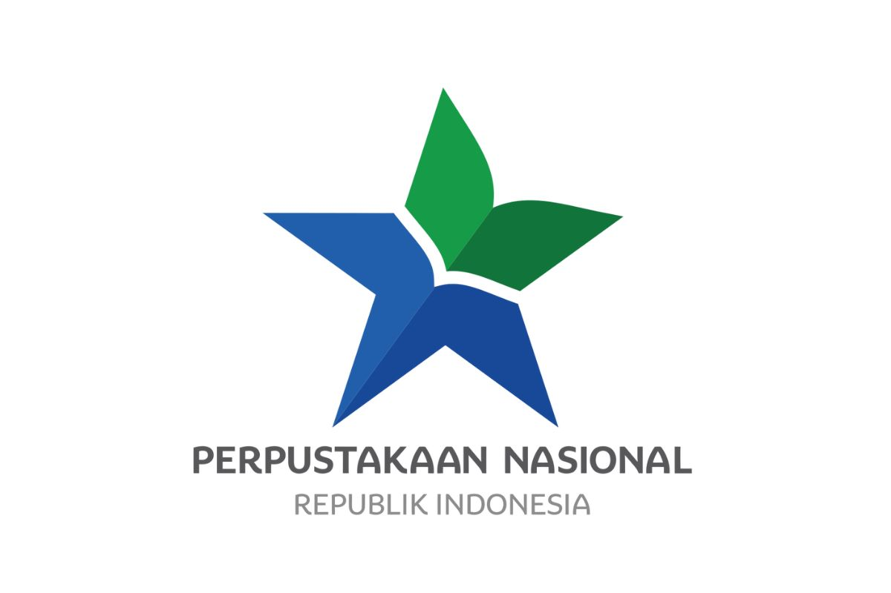
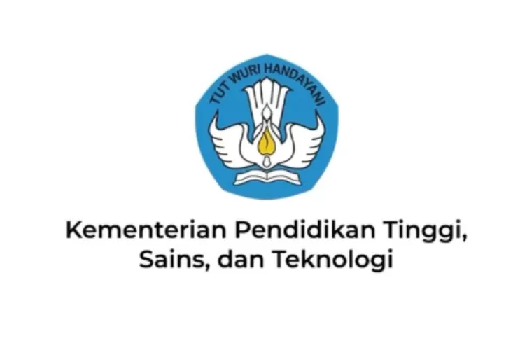

Tim Profesional
Naskah Anda ditangani oleh editor, desainer, dan tim produksi yang berpengalaman.

Kami membantu penulis, akademisi, dan profesional menerbitkan buku berkualitas dengan proses yang mudah, cepat, dan terpercaya.
Solusi terjangkau
untuk karya berkualitas
Proses jelas,
tim profesional
Penerbitan resmi
dan dapat diverifikasi
Naskah Anda ditangani oleh editor, desainer, dan tim produksi yang berpengalaman.
Proses penerbitan resmi, tercatat, dan dapat diverifikasi melalui Perpustakaan Nasional.
Penerbit Tera sudah resmi berbadan hukum dan memiliki dokumen izin penerbitan atas nama PT Lintas Batas Kreasi.
Jadwal penerbitan terukur dan dapat disesuaikan dengan target terbit buku Anda.
Tim kami siap memberi masukan agar naskah terbit dalam versi terbaiknya.
Buku dipasarkan melalui kanal digital, marketplace, komunitas, dan jaringan mitra.
Terhubung dengan ekosistem penerbitan nasional


Solusi penerbitan yang membantu mengolah gagasan menjadi buku berkualitas dan menjangkau pembaca lebih luas.
Pendampingan pengajuan buku sejak naskah diterima hingga siap terbit, memiliki ISBN, dan siap beredar melalui wadah pemasaran berskala nasional.
Mengembangkan artikel penelitian, disertasi, tesis, atau skripsi menjadi buku yang runtut dan nyaman dibaca.
Pendampingan pencatatan Hak Kekayaan Intelektual untuk membantu melindungi karya dan kepemilikan penulis.
Untuk Anda yang hanya membutuhkan desain sampul dan tata letak isi. Hasil berupa file siap cetak, tanpa mengambil paket penerbitan lengkap.
Layanan penerjemahan naskah lintas bahasa dengan tetap menjaga makna, konteks, dan karakter tulisan.
Memperluas jangkauan buku melalui Google Books, Gramedia, marketplace, kanal digital, dan jaringan mitra lainnya.
Proses yang jelas dan terarah untuk membawa naskah Anda hingga siap terbit dan menjangkau pembaca.
Penulis menyampaikan kebutuhan, jenis naskah, target pembaca, dan rencana penerbitan.
Naskah dikirim untuk diperiksa kelengkapan, kesiapan materi, dan kesesuaiannya untuk diterbitkan.
Ruang lingkup, jadwal, kebutuhan produksi, serta ketentuan penerbitan disepakati bersama.
Naskah menjalani tahapan yang disepakati, seperti penyuntingan, desain sampul, dan tata letak.
Buku diproses melalui jalur penerbitan resmi hingga memiliki identitas terbit dan siap dipublikasikan.
Buku siap beredar dan dipasarkan melalui kanal nasional serta jaringan distribusi yang tersedia.
Masih ada pertanyaan? Kami siap mendengarkan.
Tanyakan kepada Tera ↗Anda dapat memulai dengan konsultasi dan mengirimkan naskah untuk diperiksa kelengkapan serta kesiapan materinya. Tim kami kemudian akan menghubungi Anda mengenai langkah berikutnya.
Setiap naskah akan ditinjau terlebih dahulu. Keputusan penerbitan mempertimbangkan kelengkapan, kualitas materi, kesesuaian isi, dan kesiapan naskah untuk memasuki proses produksi.
Durasi bergantung pada kondisi naskah dan layanan yang dibutuhkan. Jadwal kerja akan disusun dan disepakati bersama setelah naskah selesai ditinjau.
Buku yang memenuhi ketentuan akan diproses melalui jalur penerbitan resmi sehingga memiliki identitas terbit dan dapat diverifikasi melalui Perpustakaan Nasional.
Hak cipta tetap melekat pada penulis. Ketentuan mengenai hak penerbitan, penggunaan karya, dan hal terkait lainnya dijelaskan secara transparan dalam kesepakatan penerbitan.
Buku dapat dipasarkan melalui Google Books, Gramedia, marketplace, kanal digital, komunitas, serta jaringan mitra lain sesuai bentuk dan kebutuhan penerbitannya.
Revisi dapat dilakukan pada tahap produksi sesuai ruang lingkup dan jumlah revisi yang telah disepakati sebelum buku dinyatakan siap terbit.